The Long Trail
America's first long trail, up Vermont's Green Mountains to Canada.
439 km through the USA, ending at Canada border (Journey's End). It starts at Massachusetts–Vermont Line. Your ordinary week counts toward all of it: at 5,000 steps a day that's about 17 weeks, with no flights and no leave. Below are the 23 places you pass, each with its photograph and its story.
- 439km end to end
- 23landmarks
- 17 weeksat 5,000 steps a day
- Canada border (Journey's End)finishes at

The landmarks of The Long Trail
23 landmarks, in walking order. Each photograph is by the person credited beneath it, used as they licensed it.
-
Massachusetts–Vermont Line
A simple marker in the trees is all that divides Vermont from Massachusetts. No fanfare here, just spruce and the smell of balsam. Two hundred seventy-two miles of Green Mountain ridgeline wait to the north. This footpath, cut by the Green Mountain Club beginning in 1910, is the oldest long-distance hiking trail in America.
-
Glastenbury Mountain
Beech and fern give way to a lonely fire tower at 3,748 feet, a fifty-foot steel lookout raised in 1927. Unbroken forest spreads below, concealing the vanished logging town of Glastenbury, abandoned and reclaimed by the woods a century ago. These ridges anchor the Bennington Triangle, a stretch of Vermont where several hikers famously disappeared.
-
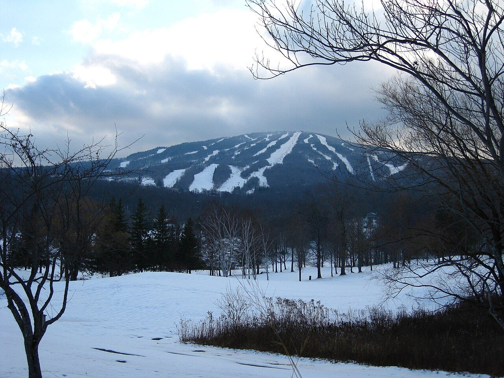
Photo: Rudi Riet from Washington, DC, United States · Wikimedia Commons, CC BY-SA 2.0 Stratton Mountain
Here at 3,940 feet the whole idea began. In 1909 James Taylor, fogbound on this summit, dreamed of a footpath the length of Vermont. Later Benton MacKaye said the same peak sparked his Appalachian Trail. Two great trails, one mountain. The caretaker's cabin still stands beside the restored fire tower.
-
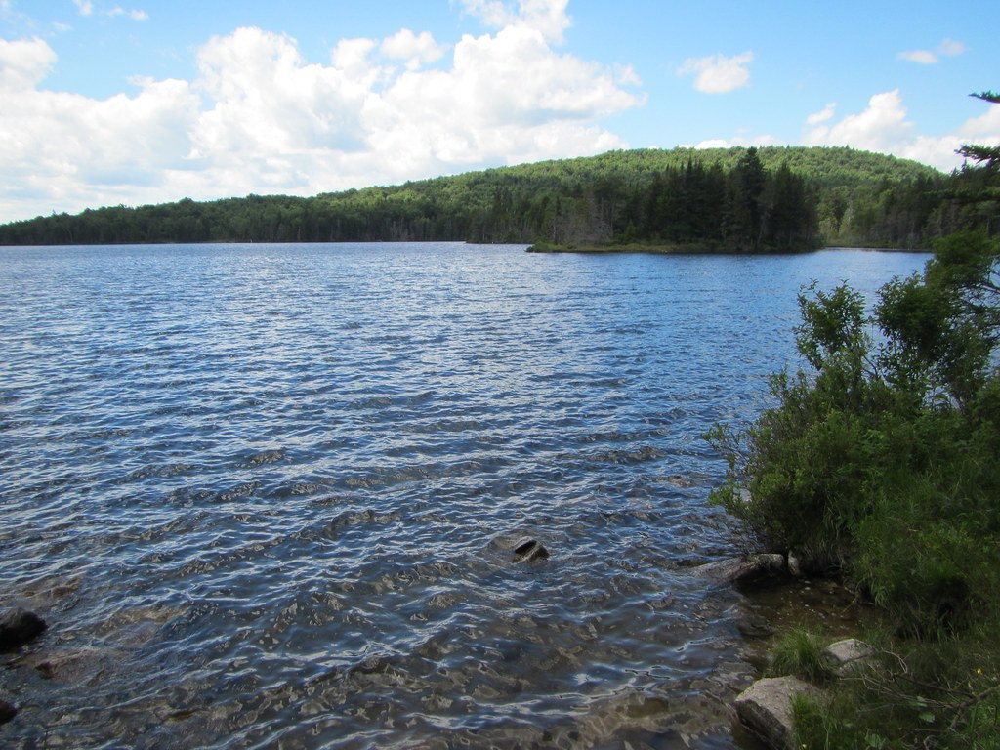
Photo: TheTurducken · Flickr via Openverse, CC BY 2.0 Stratton Pond
A quiet sheet of water rings the base of the mountain, the largest body of water on the entire Long Trail. Loons call across it at dusk. Heavy camping once wore the shoreline bare, and a caretaker now guards the fragile banks, steering tents back among the trees away from the water's edge.
-
Bromley Mountain
Ski lifts stand idle in the summer haze above Bromley's cleared summit, 3,284 feet. An observation deck opens the first long view north, ridge behind ridge, all the way to Killington. A warming hut left from the resort offers dry refuge when weather turns. On a fair day the panorama runs unbroken.
-
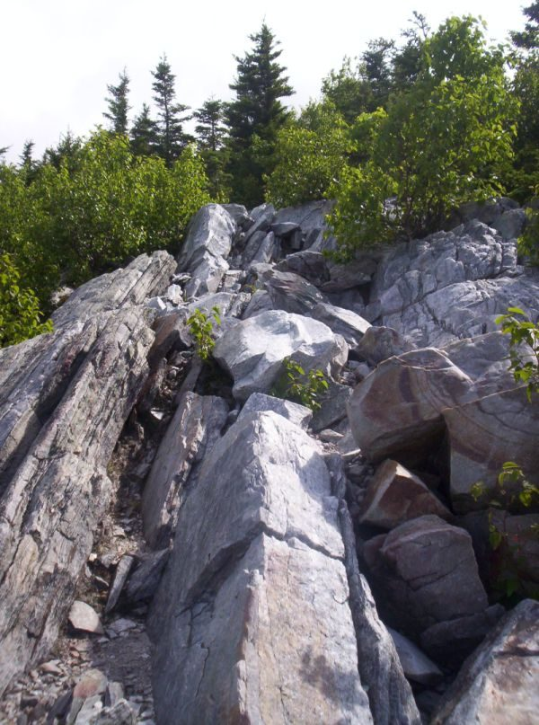
Photo: Omarcheeseboro · Wikimedia Commons, CC BY-SA 3.0 Baker Peak
Bare rock ledges tilt out over the Valley of Vermont. Baker Peak is modest at 2,850 feet, yet the scramble to its edge is the most exposed stretch of trail so far, all hands on stone and valley wind below. Hawks ride the thermals along the cliff before the path drops back into the green.
-
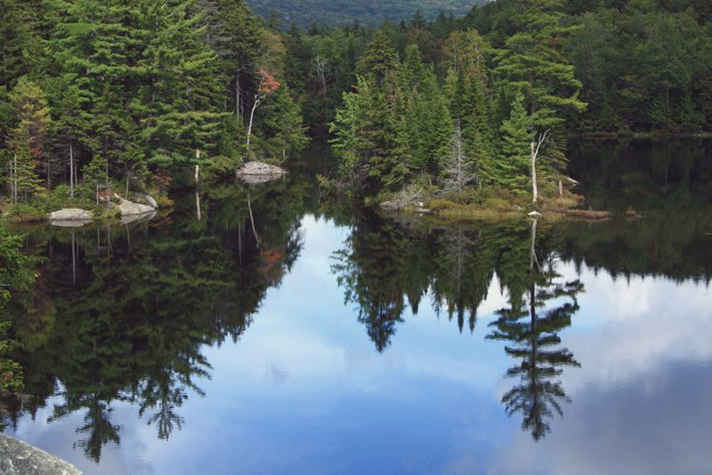
Photo: Brian W. Schaller · Wikimedia Commons, FAL Little Rock Pond
Ringed by hemlock, Little Rock Pond ranks among the loveliest camps on the whole trail. A tiny island sits just offshore, and the water runs cold and clear enough to drink once filtered. Evenings bring the sudden slap of a beaver's tail across the surface, and the stillness settles deep over the shore.
-
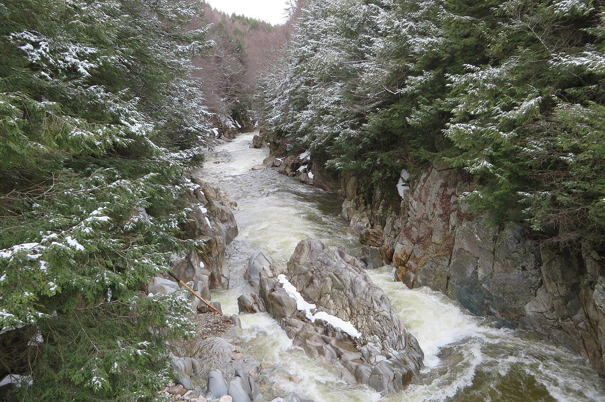
Photo: Ken Gallager · Wikimedia Commons, CC BY-SA 4.0 Clarendon Gorge
The Mill River has cut a deep gorge here, spanned by a swaying suspension bridge raised in memory of a hiker swept away in a flood. Far below, water hammers through the rock chute. On hot afternoons swimmers gather in the pools while the trail crosses high on its cables and carries on north.
-
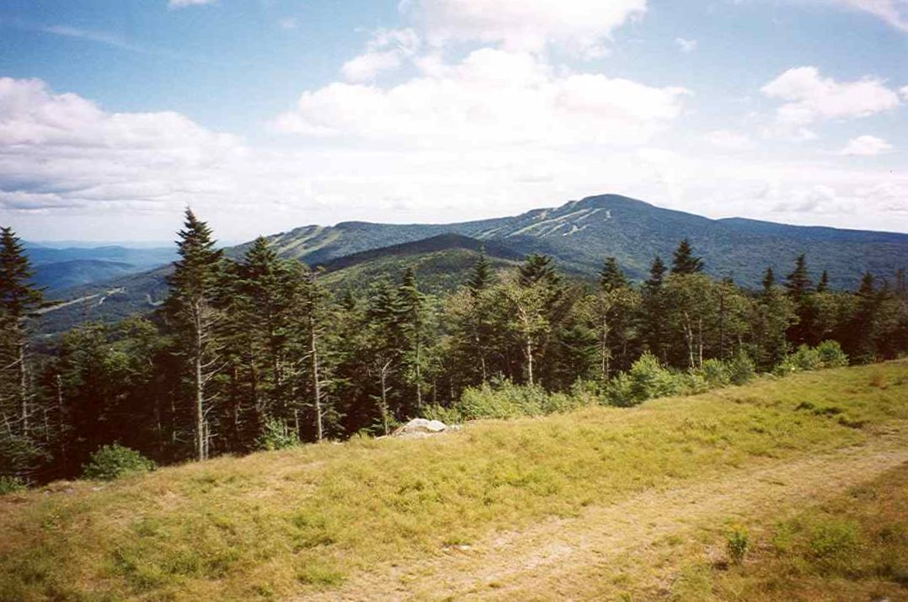
Photo: petersent · Wikipedia, Public domain Killington Peak
A steep side path climbs to Killington's 4,235-foot crown, Vermont's second-highest peak and the trail's high point so far. Cooper Lodge, the highest shelter on the Long Trail, sits just below the summit. From the top the Green Mountains roll north, and the White Mountains float on the far eastern horizon.
-
Maine Junction, Sherburne Pass
At Maine Junction the two trails part. For nearly a hundred miles the Appalachian Trail has shared this footpath; here it swings east toward New Hampshire and distant Katahdin. The Long Trail continues alone, northward, into wilder and lonelier country. Beyond this point the boots grow far fewer on the path.
-
Brandon Gap
The road at Brandon Gap slices through the range at 2,170 feet. Above it looms the Great Cliff of Mount Horrid, where peregrine falcons nest and the trail is sometimes closed to protect them. Water runs at the notch before the climb begins, the cliff face glowing in the late afternoon light.
-
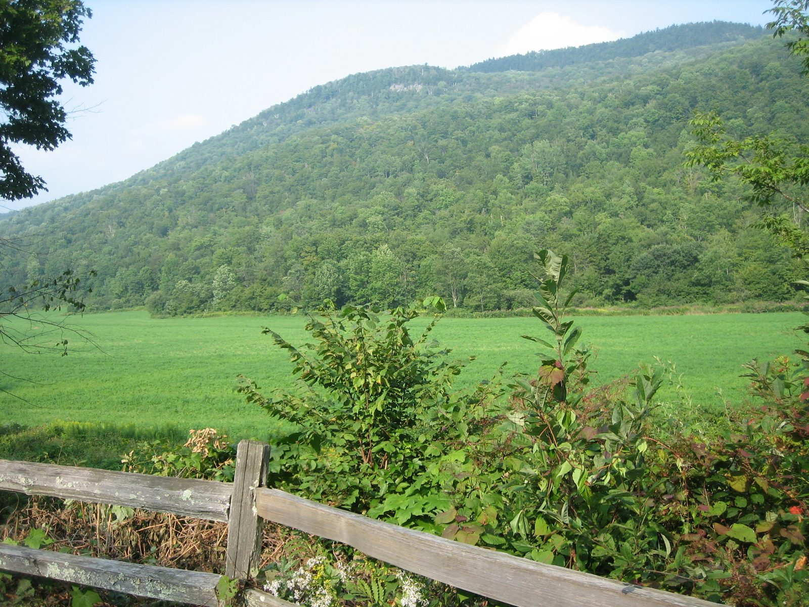
Photo: Jessamyn · Wikipedia, Public domain Middlebury Gap
Route 125 crosses at Middlebury Gap, deep in the country Robert Frost wrote his poems about. Snow Bowl ski trails scar the slopes above. This marks the middle of Vermont, the trail's long spine half-walked, with the higher peaks crowding the northern half still ahead.
-
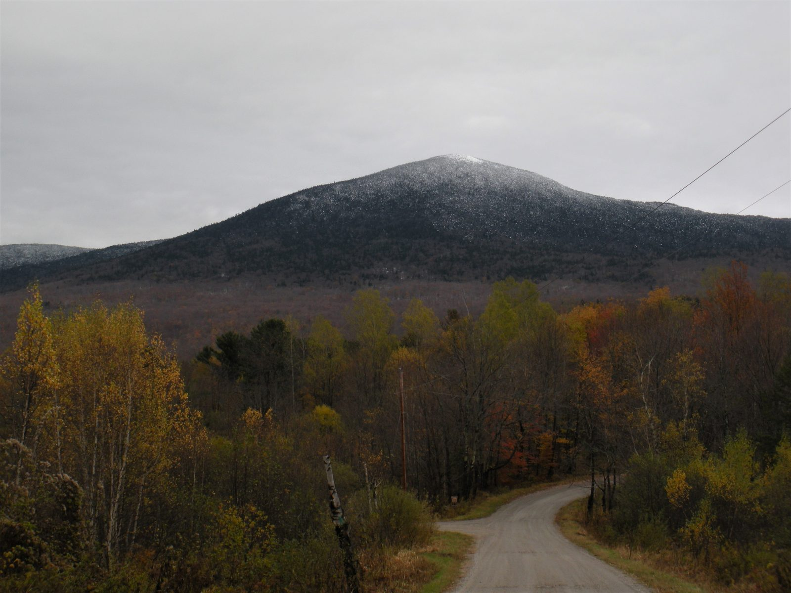
Photo: Firehill · Wikipedia, CC BY-SA 4.0 Mount Abraham
Treeline falls away on Mount Abraham, which breaks 4,006 feet into rare Vermont alpine tundra, fragile sedges and diapensia clinging to exposed rock. Cairns mark a route across the summit, and signs ask hikers to tread only on stone. Westward the Adirondacks rise blue and jagged across Lake Champlain.
-
Lincoln Gap
Lincoln Gap carries Vermont's highest paved road across the ridge at 2,424 feet, closed entirely under winter snow. Day-hikers' cars cluster in the small lot, and the notch makes an easy hitch into town. Water refills here before the long climb north toward Mount Ellen.
-
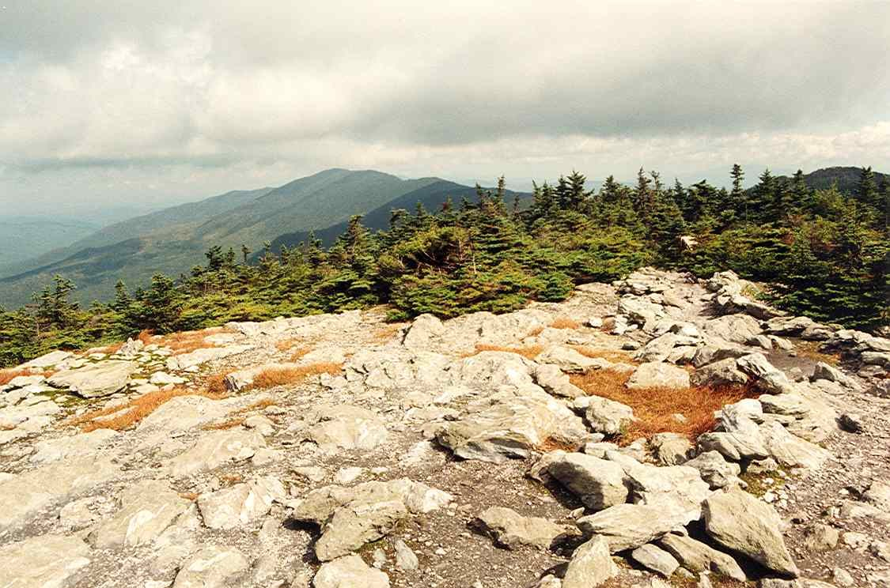
Photo: petersent · Wikipedia, Public domain Mount Ellen
Sugarbush chairlifts crest the top of Mount Ellen, 4,083 feet, among the highest ground in Vermont. The summit itself is wooded and viewless, a quiet green cap. Yet the Monroe Skyline leading to it delivers one open outlook after another, the finest ridge-walking on this half of the trail.
-
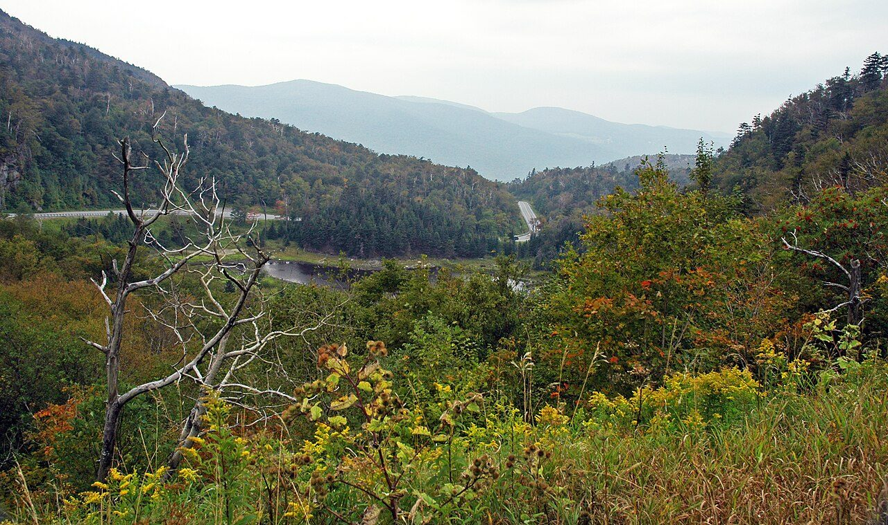
Photo: James St. John · Wikimedia Commons, CC BY 2.0 Appalachian Gap
Route 17 twists over Appalachian Gap at 2,365 feet on a dizzying run of switchbacks. The climb out, over the ledges of Baby Stark toward Molly Stark's Balcony, turns to a hand-over-hand scramble on iron rungs and gnarled tree roots. From the top the whole traced ridge falls away behind.
-
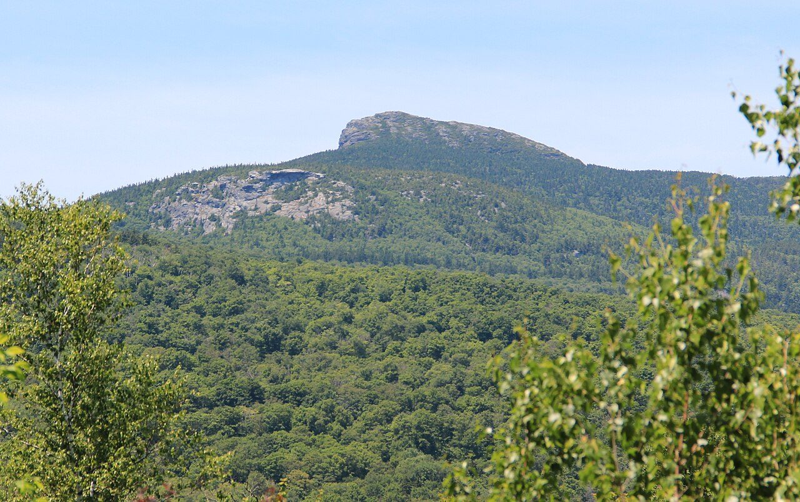
Photo: Thomsonmg2000 · Wikimedia Commons, CC0 Camel's Hump
No ski lift, no road, no tower. Camel's Hump keeps its wild profile at 4,083 feet, the most striking summit in all Vermont. Alpine tundra crowns the top, and a bomber wreck from 1944 still rusts on the eastern slope. The wind up here never fully stops.
-
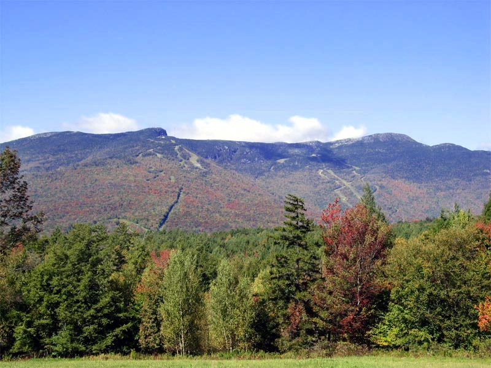
Photo: The original uploader was Redjar at English Wikipedia. · Wikipedia, CC BY-SA 3.0 Mount Mansfield
The roof of Vermont. At 4,393 feet Mansfield holds the highest ground in the state, its open tundra running from the Nose to the Chin, the two high points of a famous face-shaped profile. Rare arctic plants survive here, marooned since the glaciers. On a clear day four states and Canada spread below.
-
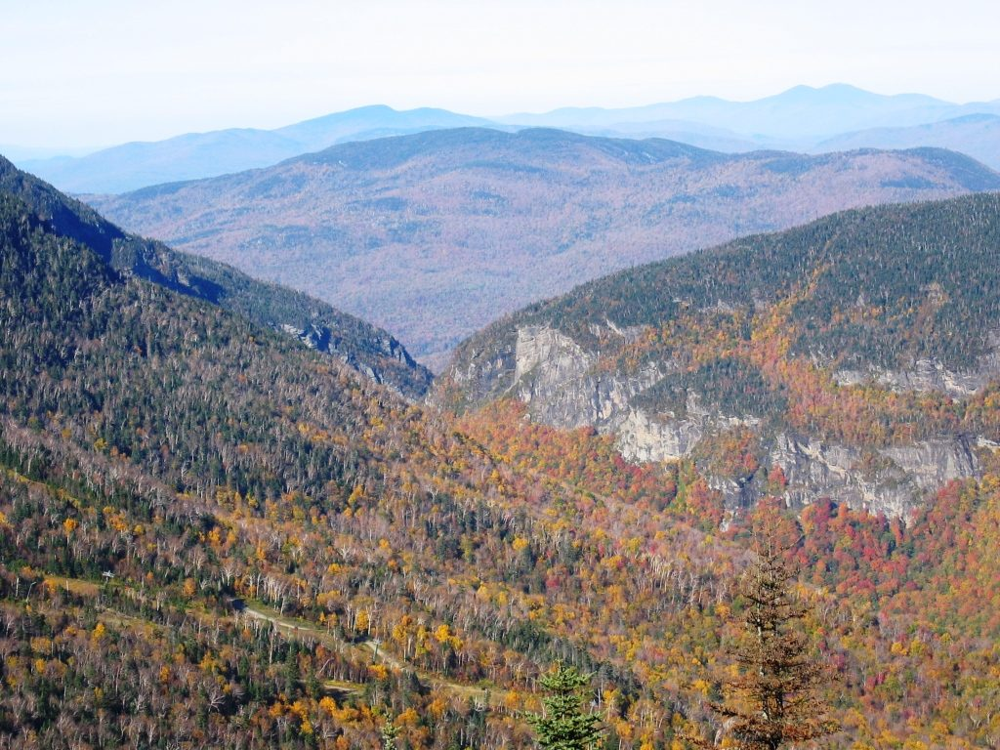
Photo: Aiken1986 · Wikipedia, CC BY-SA 3.0 Smugglers' Notch
Down into a chasm of house-sized boulders and cold shadow. Smugglers' Notch earned its name in the early 1800s, when contraband and fugitives moved through this narrow cleft toward Canada. Ice lingers in the caves well into summer. Cliffs rear a thousand feet overhead. It is one of the trail's strangest, coldest passages.
-
Whiteface Mountain
Whiteface rises to 3,714 feet at the head of the Sterling Range, its final mile steep, rocky, and slick with mud. This is the northern wilds, where the Long Trail narrows to a lonely thread. A ledge near the summit looks back south across every ridge already crossed before the path drops down the far side.
-
Belvidere Mountain
An old fire tower still stands on Belvidere at 3,360 feet, and the climb earns the last great panorama before the border. Eastward lie the scars of an abandoned asbestos mine. Jay Peak fills the skyline ahead, the final giant of the walk, with only a handful of miles left to run.
-
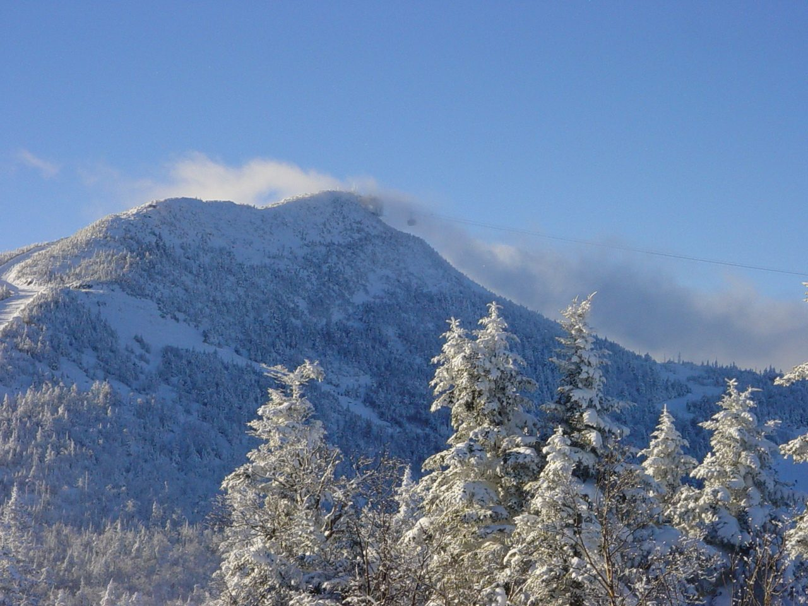
Photo: Hanumanix at English Wikipedia · Wikimedia Commons, Public domain Jay Peak
Jay Peak is the last mountain, throwing up 3,858 feet of open rock, its aerial tram gleaming and ski trails cut wide below. From the summit the dark line of the Canadian border forest shows at last, only a dozen miles north. Wind off the frontier carries a colder edge, and the end is close.
-
Journey's End, Canadian Border
A clearing in the spruce, a small monument, and a swath cut dead straight through the trees to mark the Canadian line: this is Journey's End. Two hundred seventy-two miles of Green Mountain ridge run back from here to the Massachusetts border, every summit strung along one continuous footpath. The oldest long-distance trail in America ends at a border stone, and the wilderness closes quietly behind it.
Walking The Long Trail
Your watch is already counting these steps. Watch Walks spends them on The Long Trail, all 439 km of it, and hands you each landmark as you reach it. There's no route recording, no account and no ads. The Inca Trail is free; this one is a one-time purchase with no subscription.
Other trails in North America
- Appalachian Trail 3,536 km · USA
- Pacific Crest Trail 4,265 km · USA
- Route 66 3,940 km · USA
- John Muir Trail 340 km · USA (California)
- Wonderland Trail 150 km · USA (Washington)
- Tahoe Rim Trail 265 km · USA (California/Nevada)